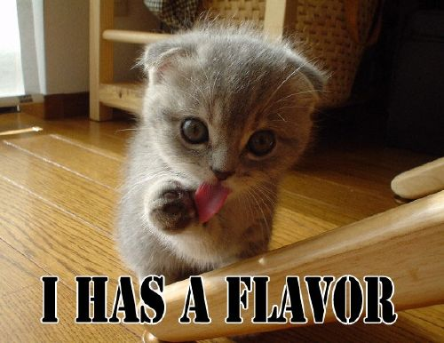

LOLCats
LOLCats Explained
That cat is HUGE!!!
The Death of LOLCats
- Kill all LOLCats
- Burn LOLCats remains.
- Do the dishes.
Archer Fish
Interesting little fish
There is no way to describe how insanely joyous this moment truly is. Blackout...
This text is soooooo small.

This tree struck me as quite beautiful. It was added to this site to incorprate at least some inkling of class and sophistication.